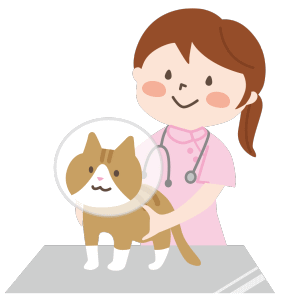
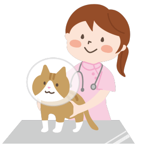

ペットの生活習慣病
ネコやイヌも6歳を過ぎると心臓病や糖尿病など生活習慣病にかかりやすくなってきます。病気になる前に検査をしましょう
ペットの肥満にご注意！
肥満は健康への黄色信号。必要以上にえさやおやつを与えないようにしましょう。お気軽にご相談ください。
012 コウヨウ
ネコやイヌも6歳を過ぎると心臓病や糖尿病など生活習慣病にかかりやすくなってきます。病気になる前に検査をしましょう
肥満は健康への黄色信号。必要以上にえさやおやつを与えないようにしましょう。お気軽にご相談ください。